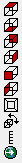
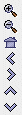
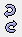

Zooming, Panning and Rotating
There are several methods to zoom, pan, and rotate in McIDAS-V. You can use the
mouse, the arrow keys, a rubber band box, or the Zoom/Pan Toolbar. To reset to
the initial base viewpoint use the key combination Ctrl+R.
Note: You need to click in the view window when using key combinations.
Note: If you are using an Apple Mac with a single button mouse, see below.
|
Zooming
|
Panning
|
Rotating
|
| Mouse |
Shift-Left Mouse Drag: Select a region by pressing
the Shift key and dragging the left mouse button (MB1).
Shift-Right Mouse Drag: Hold Shift key
and drag the right mouse button (MB3). Moving up zooms in, moving down
zooms out. |
Ctrl-Right Mouse Drag: Hold Control key
and drag right mouse to pan. |
Right Mouse Drag: Drag right mouse to rotate. |
| Scroll Wheel |
Scroll Wheel-Up: Zoom out.
Scroll Wheel-Down: Zoom in. |
|
Ctrl-Scroll Wheel-Up/Down: Rotate clockwise/counter
clockwise.
Shift-Scroll Wheel-Up/Down: Rotate forward/backward clockwise. |
| Arrow keys |
Shift-Up Arrow: Zoom in.
Shift-Down Arrow: Zoom out. |
Ctrl-Up arrow: Pan down.
Ctrl-Down arrow: Pan up.
Ctrl-Right arrow: Pan left.
Ctrl-Left arrow: Pan right. |
Left/Right Arrow: Rotate around vertical axis.
Up/Down Arrow: Rotate around horizontal axis.
Shift-Left/Right Arrow: Rotate clockwise/counter clockwise. |
The default mouse and keyboard controls can be customized using the Navigation
controls preferences tab by selecting Edit->Preferences from
the main menu.
Apple Mac One Button Mouse Controls
Mouse controls are a bit more challenging if you are running McIDAS-V on a Mac
with a single mouse button. The typical left mouse button (MB1) functions are
done with a click of the button. Right mouse options (MB3) are simulated using
the Option key with a mouse click. Use the following:
- Option + click to rotate
- Shift + Option + click to zoom
There is no replacement for the mouse panning actions on the Mac. Use the keyboard
arrow functions or the Viewpoint toolbar instead.
The Viewpoint Toolbar

The Viewpoint Toolbar allows you to quickly switch the point of view to any of
six choices, including from overhead (the same as you see in a new display),
from below, and from north, east, south or west. The buttons show the side of
the point of view looking into the 3D display volume. Click on any of the buttons
to change the point of view. The top button for overhead is also useful if the
display is in a confusing state and you want to get oriented.
The other three buttons allow you to switch perspective between converging to
infinity and not converging, define your own viewpoint settings, and set the
vertical limits.
You can "tear away" the toolbar and place it elsewhere on your screen as a tiny
window by dragging with the right mouse button on the textured area above the
toolbar. Clicking on the x on the toolbar will then restore the toolbar to its
original location.
You can specify any viewpoint exactly from any angle in 3D you like using
the View->Viewpoint->Viewpoint Dialog menu
choice.
The Zoom/Pan Toolbar

The Zoom/Pan Toolbar allows you to zoom and pan. Clicking on the "plus" icon
zooms in, centered on the center of the display. Clicking on the "minus" icon
zooms out, centered on the center of the display. Clicking on the "house" icon
restores the initial point of view of this projection (overhead, centered on
center of the map projection in use). Clicking on one of the arrow buttons moves
the point of view in the direction of the button; the display moves in the opposite
direction. If you click on the up button, the map and display move down.
You can "tear away" the toolbar and place it elsewhere on your screen as a
tiny window by dragging with the right mouse button on the textured area above
the toolbar. Clicking on the x on the toolbar will then restore the toolbar
to its original location.
The Viewpoint Undo/Redo Buttons

The Undo and Redo buttons allow you to undo or redo viewpoint changes.